← Índice de los 69 tutes de IDA
Tute 23 · Ejercicio IDA1.exe
▶ video afín (mismo autor, en x64dbg): «18 Funciones basadas en EBP vs basadas en ESP» · se conecta con: IDA · Llamadas y pila · Flujo · Vulnerabilidades (defensivo)
INTRODUCCIÓN AL REVERSING CON IDA PRO DESDE CERO PARTE 23
EJERCICIO IDA1.exe
Había quedado para solucionar el ejercicio pendiente IDA1.exe
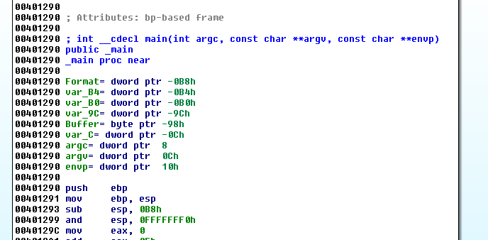
La función es basada en EBP como los anteriores, lo que tiene de diferente este ejemplo que está compilado con DEVC++, que tiene una forma particular de compilar las llamadas a las apis, diferente de lo acostumbrado y que al que no lo vio nunca lo puede marear.
Bueno vamos por partes dijo Jack, lo primero que vemos es la función main, si no les aparece también pueden llegar a la función importante mirando las strings.
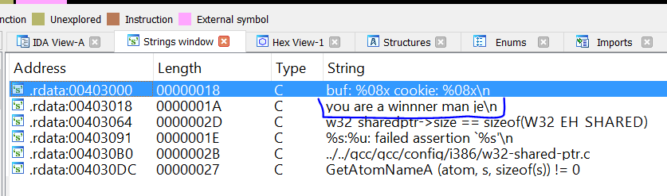
Haciendo doble click en la string “You are a winner man je”, llegamos a.
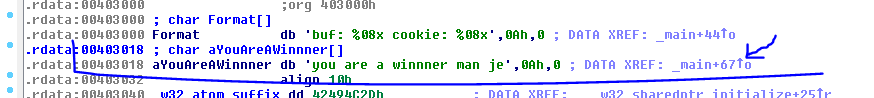
Pasando el mouse por la flechita de la referencia podemos ver de dónde se la llama.
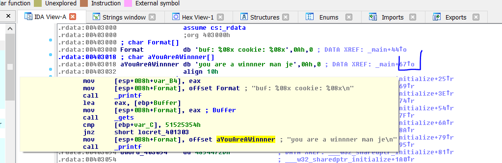
Pero mejor haciendo CTRL + X vamos a donde esta ese código.
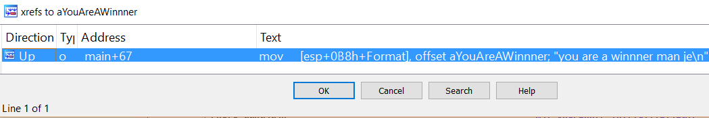
Yendo allí clickeando en la referencia.
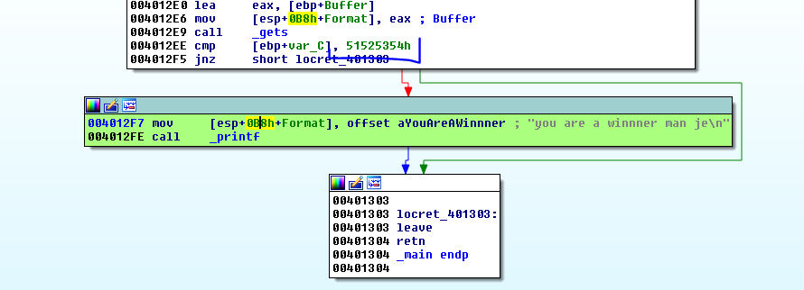
Cambio a color verde la parte donde debo llegar que sería el CHICO BUENO.
Vemos que justo antes hay una comparación de una variable var_C con una constante 0x51525354.
Si hacemos click derecho en ese valor 0x51525354, salen las alternativas para representarlo.
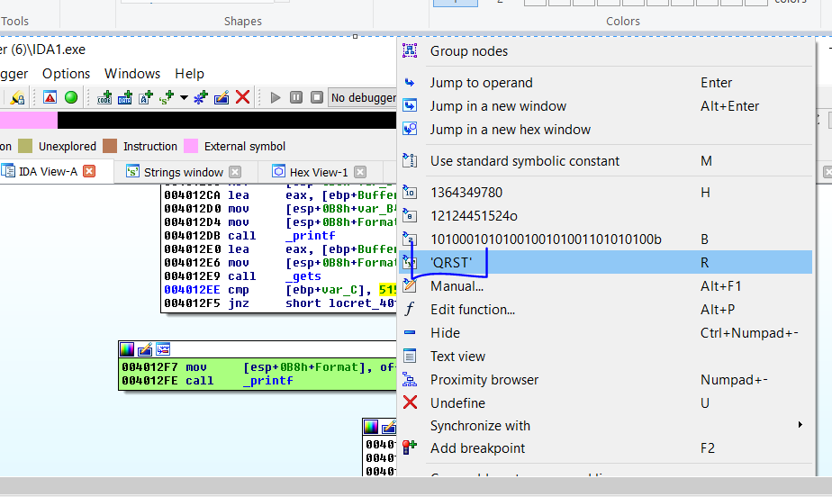
Puedo cambiarlo por las letras QRST que son los caracteres ASCII de ese valor hexadecimal.
Algo que podemos darnos cuenta, es que este compilador no utiliza el CANARY de protección, pues al inicio de la función se debería leer el mismo de una dirección de la sección data y se xorea con EBP y se guarda justo arriba del STORED EBP en el stack y además se lo lee nuevamente justo antes de finalizar la función para llamar al CALL que lo chequea, nada de eso pasa aquí, si vemos el análisis estático del stack, haciendo doble click en cualquier variable.
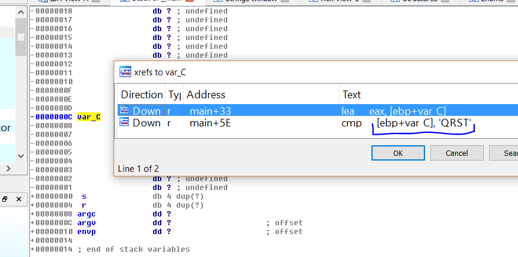
Vemos que lo único que hay en el stack, justo arriba del STORED EBP, es la variable var_C que la compara con la string QRST para ir a chico bueno, con lo cual se descarta que sea el CANARY, pues en este caso es un chequeo que es código original del programa, un CANARY no se mezcla con decisiones del código original del programa, es algo agregado por el compilador, externo al código original.
Podemos renombrarla a esa variable para no confundirla con el CANARY cómo var_DECISION.
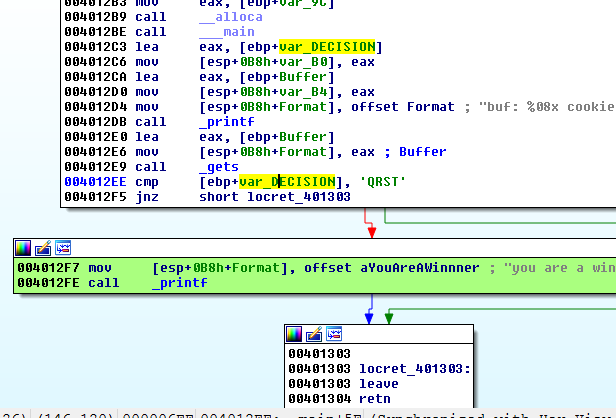
La cual se usa dos veces en la función, pero realmente nosotros podemos cambiar el valor de dicha variable para hacer que el programa vaya a chico bueno?
Los que miran este código lo primero que les llama la atención es que hay variables y argumentos relativos a EBP y hay otras que están tomadas con ESP como referencia.
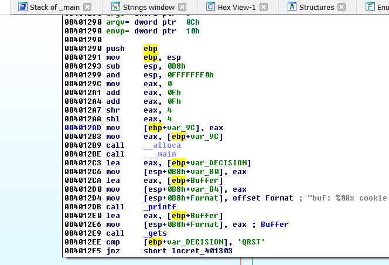
Todo ese código inicial es agregado por el compilador para setear ESP justo arriba de las variables y buffers locales, luego del SUB ESP, 0B8 se ajusta con esto, aunque nunca lo varía mucho más que alinearlo y redondearlo, podríamos hacer las cuentas, pero si no queremos complicarnos la vida, podemos debuggear para ver a qué valor queda ESP justo al terminar todo esto y empezar con el código original de la función.
El que tenga ganas de debuggear lo puede hacer pero tenemos otra ayuda de IDA que es muy útil que es la variación de ESP a partir del inicio de la función que se toma como 0.
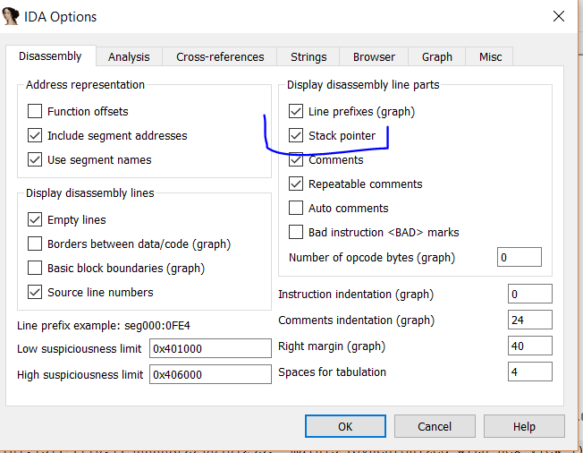
Si vemos el código ahora.
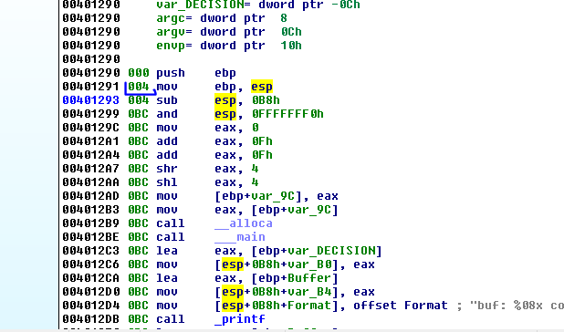
Vemos la influencia de cada instrucción en el stack a partir de cero que es el inicio, luego de ejecutar el PUSH EBP, el stack disminuye en 4, por eso la segunda línea tiene el 004 a la derecha.
La segunda instrucción es MOV EBP,ESP lo cual no cambia el stack porque es solo un MOV y por lo tanto ESP queda igual, el que cambia es EBP.
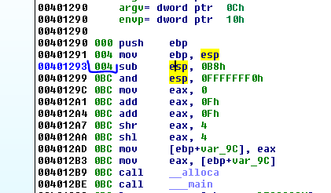
Por eso la tercera línea tiene el mismo 004 porque no cambió ESP.
Recordemos que ESP y EBP quedan iguales y EBP será a partir de aquí la referencia quedando ambos a 4 del ESP del inicio.
La siguiente línea le resta 0xB8 a ESP con lo cual queda a 0xBC del inicio y como EBP quedó en 4 la diferencia entre EBP y ESP será justo 0xB8.
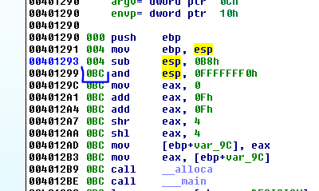
Vemos que luego la distancia no cambia más ni siquiera al pasar el CALL ALLOCA y CALL _MAIN que son agregados por el procesador, así que podemos concluir que no le afecta todo eso, y que la distancia entre EBP y ESP es de 0xb8 que es el espacio para la variables locales y buffers.
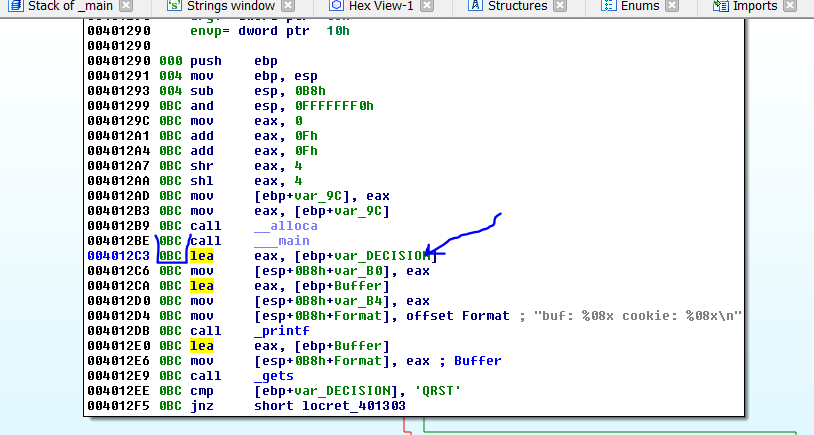
Allí ya empieza el código de la función en sí, y la distancia de ESP con respecto al inicio quedó en 0xBC y 0xB8 es la zona reservada para variables y buffers.
A la variable var_9c como es una variable temporal creada por el compilador y no se usa más le pondremos TEMP.
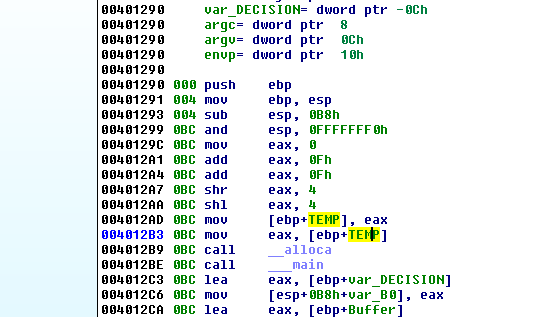
Debajo de TEMP tenemos el Buffer, haciendo click derecho ARRAY vemos que el largo es 140 decimal por el largo 1 byte de cada elemento, así que el largo del Buffer es 140 decimal.
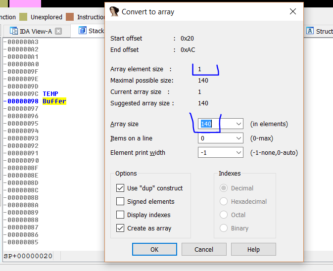
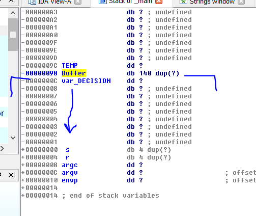
Si lográramos desbordar el Buffer copiando al mismo más de 140 bytes, el mismo tendría una vulnerabilidad del tipo Buffer Overflow, explotando la cual se podría pisar la variable var_DECISION y si pudiéramos escribir más hacia abajo aun, llegaríamos a pisar el STORED EBP y el RETURN ADDRESS dependiendo de cuanto podamos copiar.
Continuemos con el reversing, el punto más álgido de la compilación es la forma como pasa los argumentos a las funciones, en vez de usar PUSH para guardar los argumentos en el stack, los guarda directamente con MOV, veremos esto.
Ahí se ve claro en este caso printf tiene un solo argumento que es el la dirección a la string “You are a winner je”, y ningún otro argumento más.
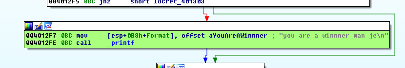
Vemos que guarda esa dirección ya que usa la palabra OFFSET delante, y la guarda en el stack, pero dónde? la notación no nos ayuda mucho pero si hacemos click derecho veremos alguna notación alternativa.
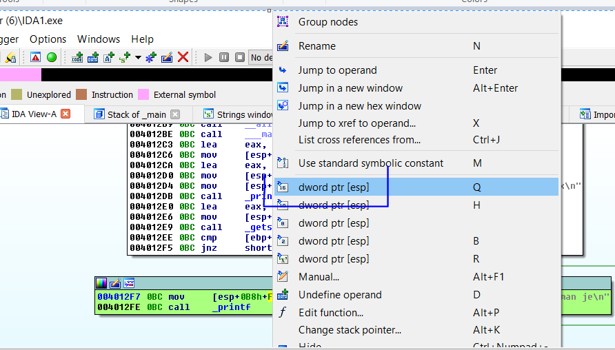
Si cambiamos por esto
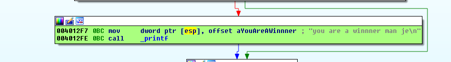
Vemos que lo que realmente está haciendo es colocar en el contenido de ESP (que es la posición superior del stack) la dirección de la string para usarla como argumento, o sea que este programa en vez de hacer PUSH a la posición superior del stack, mueve los argumentos a las posiciones del stack con MOV, y lógicamente el PUSH cambiaría el valor de ESP, mientras que un MOV no, se puede apreciar en el valor BC justo antes de la función.
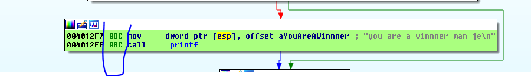
Lo mismo pasa en todas las otras apis si aplicamos el mismo criterio solo en las que pueden ser argumentos de apis, haciendo click derecho y cambiando por la notación alternativa, nos queda mucho más entendible el código.
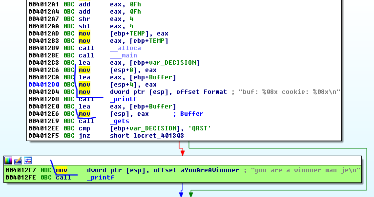
Vemos que el primer printf el cual tiene tres argumentos pues hace format string reemplazando en la string “buf : %08x cookie : %08x\n”.], por los dos argumentos superiores.
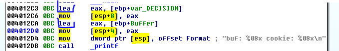
El primer argumento es la dirección de la variable var_DECISION que obtiene con el LEA, lo mueve a EAX y lo guarda en el contenido de ESP + 8.
El segundo argumento es la dirección de la variable Buffer que la obtiene con el LEA, la mueve a EAX y la guarda al contenido de ESP+4 como siguiente argumento y el tercero lo guarda en el contenido de ESP y será la dirección de la string en este caso con el formato.
Si uno lo ejecuta fuera de IDA vemos que es la impresión en la consola de las direcciones de ambas variables, ya que reemplaza en la string original haciendo format string, por el valor hexadecimal de ambas direcciones porque usa %x que es la conversión para imprimir el valor hexa.
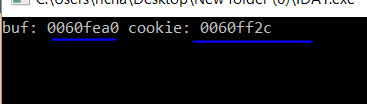
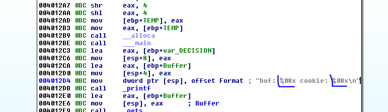
Luego continúa llamando a la función gets la cual ingresa caracteres por teclado sin ningún límite, por lo cual puede escribir más de 140 caracteres sin problema.
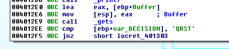
Aquí también le pasa como argumento al contenido de ESP, la dirección del Buffer que es donde escribirá.
Así que sabemos que si escribo por ejemplo 140 Aes y luego TSQR ya que debe estar al revés por el little endian, el programa me debería saltar a chico bueno ya que pisaremos la variable var_DECISION que está justo debajo del Buffer, con el valor QRST, probemos primero a mano, antes de hacer el script.
Imprimí la string en IDA y la copio al portapapeles, la pego aquí.
AAAAAAAAAAAAAAAAAAAAAAAAAAAAAAAAAAAAAAAAAAAAAAAAAAAAAAAAAAAAAAAAAAAAAAAAAAAAAAAAAAAAAAAAAAAAAAAAAAAAAAAAAAAAAAAAAAAAAAAAAAAAAAAAAAAAAAAAAAAATSRQ
Lo corro en una consola sino se cerrará y no veré la string si sale, cuando queda esperando le pego la string y...
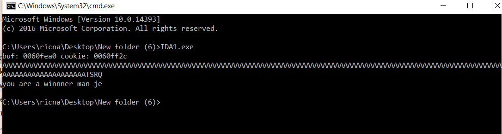
El script es muy sencillo también es igual que el anterior en este caso no tiene dos entradas por stdin sino solo una
from subprocess import *
p = Popen([r'C:\Users\ricna\Desktop\New folder (6)\IDA1.exe', 'f'], stdout=PIPE, stdin=PIPE, stderr=STDOUT)
print "ATACHEA EL DEBUGGER Y APRETA ENTER\n"
raw_input()
primera="A" *140 + "TSRQ\n"
p.stdin.write(primera)
testresult = p.communicate()[0]
print primera
print(testresult)
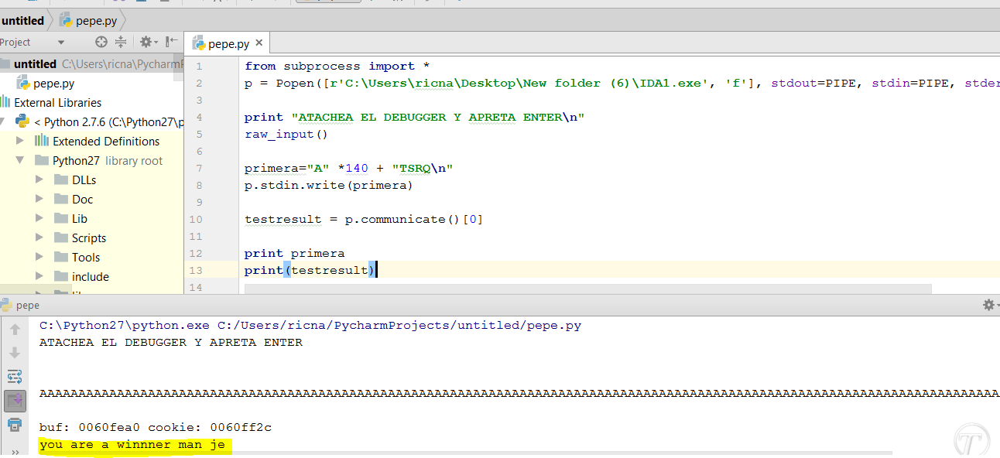
Ahí se ve el resultado, muchos no habrán podido hacerlo por la forma de pasar los argumentos, pero ahora les será más sencillo hacer el ejercicio 2 ya que es muy parecido y esta compilado en forma similar, pero ya saben el truco.
El siguiente ejercicio se llama IDA2.exe
Hasta la parte 24
Ricardo Narvaja
.